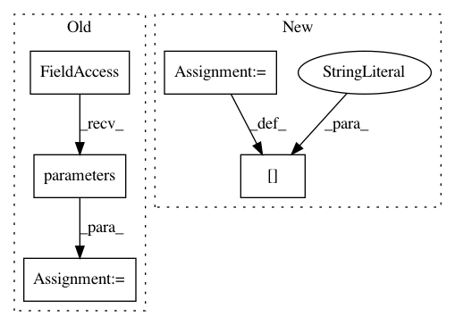

7ee1d28458da68a76903a38dda5164e6abcaebf1,fairseq/trainer.py,Trainer,__init__,#Trainer#Any#Any#Any#,30
Before Change
self.criterion = criterion.cuda()
// initialize optimizer and LR scheduler
self.optimizer = optim.build_optimizer(self.args, self.model.parameters())
self.lr_scheduler = lr_scheduler.build_lr_scheduler(self.args, self.optimizer)
// initialize meters
self.meters = OrderedDict()
self.meters["train_loss"] = AverageMeter()
After Change
self.meters["gnorm"] = AverageMeter() // gradient norm
self.meters["clip"] = AverageMeter() // % of updates clipped
self.meters["oom"] = AverageMeter() // out of memory
self.meters["wall"] = TimeMeter() // wall time in seconds
self._buffered_stats = defaultdict(lambda: [])
self._flat_grads = None
In pattern: SUPERPATTERN
Frequency: 3
Non-data size: 5
Instances
Project Name: elbayadm/attn2d
Commit Name: 7ee1d28458da68a76903a38dda5164e6abcaebf1
Time: 2018-06-15
Author: myleott@fb.com
File Name: fairseq/trainer.py
Class Name: Trainer
Method Name: __init__
Project Name: ray-project/ray
Commit Name: 428516056abe41f135133e732a8d44af6ce9a234
Time: 2020-04-15
Author: sven@anyscale.io
File Name: rllib/policy/torch_policy.py
Class Name: TorchPolicy
Method Name: learn_on_batch